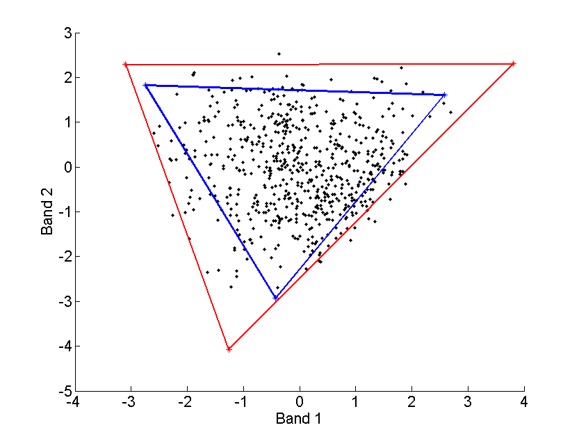

NCM-based supervised and semi-supervised Bayesian algorithms for hyperspectral image unmixing
We propose Bayesian algorithms that can be used for hyperspectral image unmixing. These algorithms are based on the normal compositional model (NCM),
contrary to most of the unmixing strategies that rely on the classical linear mixing model (LMM). Indeed, the LMM has some limitations when applied to real images.
In particular, the endmember extraction procedures based on the LMM can be inefficient when the image does not contain enough pure pixels. The NCM allows one
to alleviate the problems mentioned above by assuming that
the pixels of the hyperspectral image are linear combinations
of random endmembers (as opposed to deterministic for the
LMM) with known means (e.g., resulting from the N-FINDR
or VCA algorithms). This model allows more flexibility regarding
the observed pixels and the endmembers. In particular,
the endmembers are allowed to be further from the observed
pixels which is clearly an interesting property for the problem
illustrated in Fig. 1.

Fig. 1. Scatterplot of dual-band correct (red) and incorrect (blue) results of the N-FINDR algorithm.
The abundance parameters to be estimated satisfy positivity and additivity constraints. These constraints are naturally expressed in a Bayesian context by using appropriate abundance prior distributions. The posterior distributions of the unknown model parameters are then derived. A Gibbs sampler allows one to draw samples distributed according to the posteriors of interest and to estimate the unknown abundances.
The abundance estimation procedure and the main results are detailed in a paper published in IEEE Trans. Image Processing in 2010.
- article
 [ .pdf - 4.5Mo ].
[ .pdf - 4.5Mo ].
The corresponding Matlab codes are available below.
- matlab codes
 [ .zip - 23.5Ko ].
[ .zip - 23.5Ko ].
Extension to semi-supervised Bayesian unmixing
An extension of the algorithm is also studied for mixtures with an unknown number R of spectral components. We assume here that the endmember spectra belong to a known library. However, the number of components R as well as the corresponding spectra and abundance coefficients are unknown. The previous hierarchical Bayesian model allows to define appropriate prior regarding the new unknown parameters. Finally, a reversible jump MCMC strategy is required for estimating all the unknown parameters (number of components, spectra involved in the mixture and their respective abundance coefficients).
The abundance estimation procedure and the main results are detailed in a paper published in IEEE J. Selected Topics in Signal Processing in 2010.
- article [ .pdf - 2.6Mo ].
Extension to unsupervised Bayesian unmixing
See here